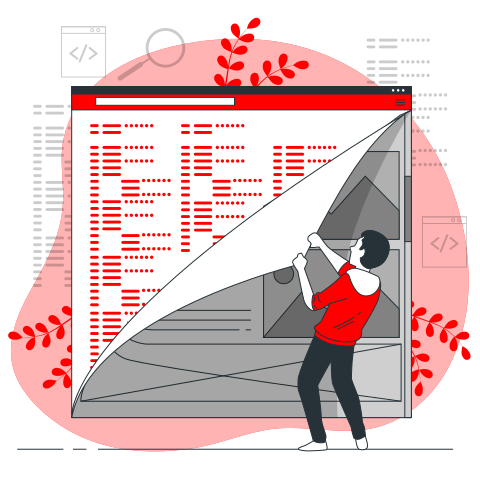

Segundo Semestre
O Módulo Específico está estruturado com 800 horas distribuídas no segundo e terceiros semestres do curso. Esse módulo permite desenvolver as competências específicas (capacidades técnicas) e as competências socioemocionais (capacidades socioemocionais) definidas a partir da análise das Unidades de Competência que compõe o perfil profissional.
Banco de Dados - BCD
A unidade curricular Banco de Dados visa propiciar a aquisição das capacidades técnicas relativas à criação da estrutura para armazenamento, manipulação e persistência de dados, bem como o desenvolvimento das capacidades socioemocionais adequadas a diferentes situações profissionais.
Carga horária: 75 horas
Interfaces para dispositivos Móveis - INDMO
A unidade curricular Interface para Dispositivos Móveis visa propiciar a aquisição decapacidades técnicas relativas desenvolvimento de interfaces para dispositivos móveis com integração aos recursos de hardware, bem como o desenvolvimento de capacidades socioemocionais adequadas a diferentes situações profissionais.
Carga horária: 75 horas
Programação Web Back-End - PWBE
A unidade curricular Programação Web Back-End visa propiciar a aquisição de capacidades técnicas rel ativas a sistemas web, à interação de aplicação entre cliente e servidor e outros sistemas computacionais, e a persistência de dados, bem como o desenvolvimento das capacidades socioemocionais adequadas a diferentes situações profissionais.
Carga horária: 175 horas
Programação Web Front-End - PWFE
A unidade curricular Programação Web Front-End visa propiciar a aquisição das capacidades técnicas relativas às interfaces web, buscando a interação com o usuário, bem como o desenvolvimento das capacidades socioemocionais adequadas a diferentes situações profissionais.
Carga horária: 75 horas